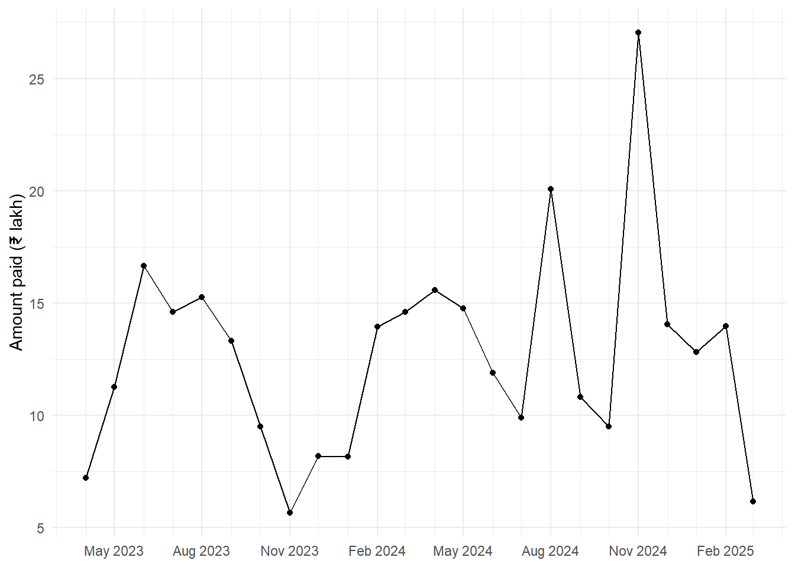
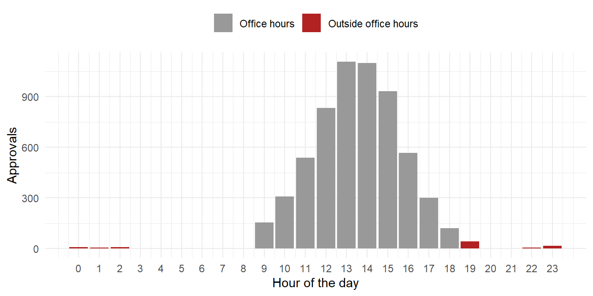
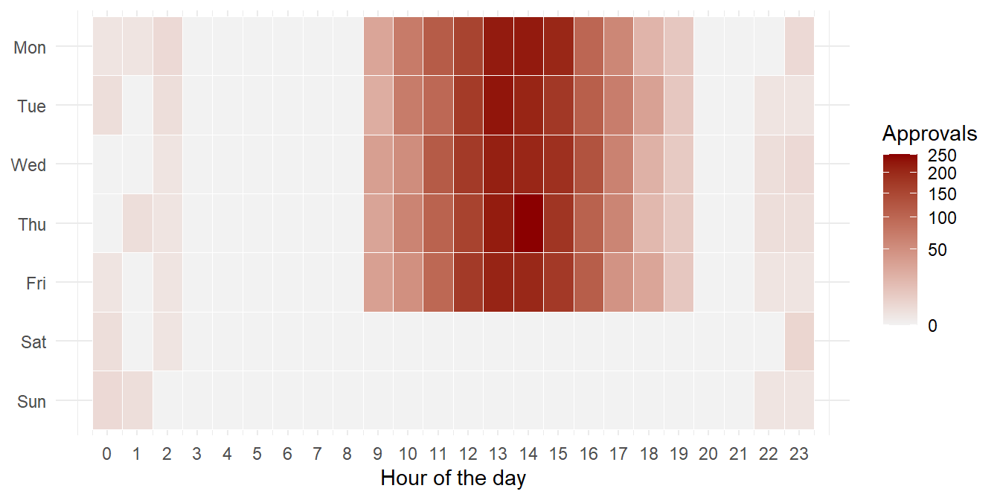

16 Dates and Times
Dates are everywhere in audit. A bill has a date of receipt and a date of payment. A contract has a period of validity. A rate has a date from which it is in force. An employee has a date of birth, a date of joining and a date of retirement. Many audit questions are really questions about dates. Was the bill paid within the time allowed? Was a payment made on a Sunday or a gazetted holiday? Was the rate applied the one in force on the date of the bill? How long have these advances been pending?
Computerised systems also record the time of each action. A treasury’s e-payment system notes when each payment was approved. A payment approved at two in the morning is not necessarily wrong. But it deserves a question.
Dates are also easy to get wrong. One office writes 05/04/2024 for the 5th of April, and a spreadsheet reads it as the 4th of May. A time stamp stored in UTC looks five and a half hours early when read as Indian time. A month added to the 31st of January lands on a date that does not exist. In this chapter we learn to handle dates and times correctly. We start with the base R classes for dates and times. We then learn the package lubridate, which makes the work much easier. Finally, we apply both to a register of bills and a log of e-payment approvals, and find payments on holidays, long-pending bills and approvals made late at night.
Prerequisites
The package lubridate is part of the core tidyverse, so library(tidyverse) loads it too.
16.1 Our data, a register of bills
Through the chapter, we use the register of bills received by an office over two financial years, 2023-24 and 2024-25. Each bill has the date it was received, the date it was paid and the amount. Bills not yet paid on 31 March 2025 have no payment date. A few irregular payments are planted in the data. We will find them in Section 16.10. The code below creates the register. It uses several functions which we learn in this chapter, so new readers may come back to it later.
Code to create the bill register
set.seed(1947)
n <- 400
bill_register <- tibble(
bill_no = sprintf("BL-%04d", 1:n),
received = as.Date("2023-04-01") + sample(0:700, n, TRUE),
amount = round(rlnorm(n, log(60000), 0.9))
) |>
mutate(paid = received + round(rexp(n, 1 / 20)))
# Genuine payments are made on working days. Move Sundays and holidays forward.
holidays <- as.Date(c("2024-01-26", "2024-08-15", "2024-10-02",
"2025-01-26", "2025-08-15", "2025-10-02"))
for (k in 1:2) {
off <- wday(bill_register$paid, week_start = 1) == 7 | bill_register$paid %in% holidays
bill_register$paid[off] <- bill_register$paid[off] + 1
}
# Some bills are still unpaid on 31 March 2025
unpaid <- sample(1:n, 45)
bill_register$paid[unpaid] <- NA
# Payments dated after 31 March 2025 have not happened yet
bill_register$paid[which(bill_register$paid > as.Date("2025-03-31"))] <- NA
# Planted. A few payments made on Sundays and on Independence Day
bill_register$paid[c(12, 57, 133, 260)] <- as.Date(c("2024-06-09", "2024-08-15",
"2024-11-17", "2025-01-26"))bill_register# A tibble: 400 × 4
bill_no received amount paid
<chr> <date> <dbl> <date>
1 BL-0001 2024-05-09 79320 2024-05-27
2 BL-0002 2023-08-31 18606 2023-09-20
3 BL-0003 2023-11-30 195232 2023-12-07
4 BL-0004 2023-09-19 164852 NA
5 BL-0005 2023-10-10 53958 2023-10-14
6 BL-0006 2025-02-10 60648 2025-03-17
7 BL-0007 2024-03-15 108307 2024-03-18
8 BL-0008 2024-08-26 312309 NA
9 BL-0009 2024-11-23 148801 2024-12-05
10 BL-0010 2024-09-18 179674 2024-09-23
# ℹ 390 more rows16.2 Base R classes to deal with date and time variables
R has four core classes for dates and times.
-
Datefor dates. (Note the capitalD.) -
POSIXctfor date-times. -
POSIXltfor date-times, stored differently. The difference is explained in Section 16.2.2. -
difftimefor time spans.
16.2.1 Dates
The base R function as.Date() turns text into a Date. It takes a character vector and, optionally, the format in which the date is written. The default format is year, month and day, separated by hyphens. Registers in Indian offices usually write the day first, so we give the format ourselves.
as.Date("2024-12-12") # default format[1] "2024-12-12"as.Date("12-12-2024", format = "%d-%m-%Y") # day first, as in most registers[1] "2024-12-12"We can check the class of the object created.
The format uses special codes, like %d for the day and %Y for a four-digit year. Run ?strptime in your console to see them all. A ready reference for the most used codes is in Table 16.1 in Section 16.2.9.
Behind the scenes, a date is stored as a number, the count of days since an origin, 1 January 1970.
So, in R 4.3.0 and later, as.Date() also accepts a number, and counts that many days from the origin.
as.Date(1)[1] "1970-01-02"The date one day after the default origin, 1970-01-01, is returned. The argument origin changes the starting point. This is very useful in audit. Excel also stores dates as numbers, but counts from 30 December 1899. When an Excel file is read carelessly, the dates arrive as numbers like 45383. The right origin turns them back into dates.
# A date that arrived from Excel as a number
as.Date(45383, origin = "1899-12-30")[1] "2024-04-01"16.2.2 Times
To create date-time objects, we use as.POSIXct() or as.POSIXlt(). Here is the time stamp of a payment approval, written in two ways.
as.POSIXct("2024/11/17 12:20:05") # default format[1] "2024-11-17 12:20:05 IST"as.POSIXct("17-11-2024 15:30:00", format = "%d-%m-%Y %H:%M:%S")[1] "2024-11-17 15:30:00 IST"as.POSIXlt("17-11-2024 15:30:00", format = "%d-%m-%Y %H:%M:%S")[1] "2024-11-17 15:30:00 IST"The two classes store the same moment differently. POSIXct stores the number of seconds since the origin. POSIXlt stores a list of parts, the day, month, year, hour, minute, second and a few more. The code below shows both.
ct in POSIXct stands for calendar time, and lt in POSIXlt stands for local time. This explains the difference in how they are stored.
time_ct <- as.POSIXct("17-11-2024 15:30:00", format = "%d-%m-%Y %H:%M:%S")
class(time_ct)[1] "POSIXct" "POSIXt" unclass(time_ct)[1] 1731837600
attr(,"tzone")
[1] ""## POSIXlt
# Convert the above object into POSIXlt
time_lt <- as.POSIXlt(time_ct)
# Let us print it
time_lt[1] "2024-11-17 15:30:00 IST"class(time_lt)[1] "POSIXlt" "POSIXt" unclass(time_lt)$sec
[1] 0
$min
[1] 30
$hour
[1] 15
$mday
[1] 17
$mon
[1] 10
$year
[1] 124
$wday
[1] 0
$yday
[1] 321
$isdst
[1] 0
$zone
[1] "IST"
$gmtoff
[1] 19800
attr(,"tzone")
[1] "" "IST" "+0630"
attr(,"balanced")
[1] TRUELike as.Date(), as.POSIXct() also accepts a number, and counts that many seconds from the origin.
as.POSIXct(60)[1] "1970-01-01 05:31:00 IST"16.2.3 Times (without dates)
Base R has no class for a time of day without a date. The package hms, part of the tidyverse, fills this gap. It is handy for things like the office opening time.
16.2.4 Timespan
Subtracting one date from another gives an object of the special class difftime. It holds the difference, with its unit. Let us take a bill received on 2 August 2024 and paid on 20 September 2024.
Time difference of 49 daysclass(days_taken)[1] "difftime"unclass(days_taken)[1] 49
attr(,"units")
[1] "days"The bill took 49 days to pay. If it was from a micro or small enterprise, that is beyond the 45 days allowed by law.
The function difftime() gives the difference in a unit of our choice. The argument units takes one of "auto", "secs", "mins", "hours", "days" or "weeks".
We can also create a difftime object directly, for example a time limit of 15 days.
time_limit <- as.difftime(15, units = "days")
time_limitTime difference of 15 daysclass(time_limit)[1] "difftime"16.2.5 Time zones
The function Sys.timezone() gives the time zone of your computer. OlsonNames() lists all the time zones R knows. Indian Standard Time is "Asia/Kolkata".
[1] "Asia/Calcutta"grep("Kolkata|London", OlsonNames(), value = TRUE)[1] "Asia/Kolkata" "Europe/London"The tz argument of as.POSIXct() and as.POSIXlt() gives the time zone when turning numbers or text into date-times. The same number of seconds is a different clock time in each zone.
as.POSIXct(1, tz = "GMT")[1] "1970-01-01 00:00:01 GMT"as.POSIXct(1, tz = "Asia/Kolkata")[1] "1970-01-01 05:30:01 IST"16.2.6 Coercion
We have already met the functions which convert objects from one class to another.
16.2.7 Extracting parts from dates/times
Base R has some useful functions to extract parts of a date.
-
weekdays(x, abbreviate = FALSE)gives the name of the day of the week, as text. -
months(x, abbreviate = FALSE)gives the name of the month, as text. -
quarters(x)gives the calendar quarter, as text. -
julian(x)gives the number of days since the origin, as a number.
Let us take the dates of one week in August 2024.
[1] "Monday" "Tuesday" "Wednesday" "Thursday" "Friday" "Saturday"
[7] "Sunday" months(dates_vec)[1] "August" "August" "August" "August" "August" "August" "August"quarters(dates_vec)[1] "Q3" "Q3" "Q3" "Q3" "Q3" "Q3" "Q3"julian(dates_vec)[1] 19947 19948 19949 19950 19951 19952 19953
attr(,"origin")
[1] "1970-01-01"The 15th of August, Independence Day, was a Thursday. quarters() gives calendar quarters, so August is in Q3. For the Indian financial year, which begins in April, we need another way, which we see in Section 16.10.
16.2.9 strptime character codes
The table below lists the format codes most useful for reading and writing dates and date-times. To know more, see the output of ?strptime() in your console.
| Format | Meaning |
|---|---|
%y (or %Y) |
Year without (or with) century |
%m |
Month as a number (01 to 12) |
%B (or %b) |
Month name in full (or abbreviated) in the current locale |
%d |
Day of the month (01 to 31) |
%H |
Hours as a number (00 to 23) |
%I |
Hours as a number, in 12 hour format (01 to 12) |
%M |
Minute as a number (00 to 59) |
%S |
Second as a whole number (00 to 61), allowing up to two leap seconds |
%OS |
Seconds with decimals |
%T |
Same as %H:%M:%S
|
%p |
AM/PM indicator in the locale |
%A (or %a) |
Full (or abbreviated) name of the day of the week, in the current locale |
%j |
Day of the year as a number (001 to 366). For input, 366 is valid only in a leap year. |
%u |
Day of the week as a number (1 to 7, Monday is 1) |
%w |
Day of the week as a number (0 to 6, Sunday is 0) |
%U |
Week of the year as a number (00 to 53), with Sunday as the first day of the week. Typically the first Sunday of the year is day 1 of week 1. The US convention. |
%V |
Week of the year as a number (01 to 53) as defined in ISO 8601. If the week (starting on Monday) containing 1 January has four or more days in the new year, it is week 1. Otherwise, it is the last week of the previous year, and the next week is week 1. |
%W |
Week of the year as a number (00 to 53), with Monday as the first day of the week. Typically the first Monday of the year is day 1 of week 1. The UK convention. |
%z |
Offset from UTC |
%Z |
Time zone name |
16.3 Creating and reading dates with lubridate
The package lubridate, now part of the core tidyverse, makes work with dates and times much easier. Creating dates and converting text or numbers into dates is simpler than in base R. It also offers classes for time spans which make calculations on periods safer.
16.3.1 Date/date-time objects creation
Dates and date-times in lubridate are the same classes as in base R. So we can create a date (or a date-time) from a number of days (or seconds) since the origin.
[1] "2024-07-01"as_datetime(1719838800)[1] "2024-07-01 13:00:00 UTC"[1] "2026-10-05"# Check its class
class(date_today)[1] "Date"# Or see what is inside
unclass(date_today)[1] 20731
16.3.2 Parsing date/date-time objects from character
lubridate has a family of functions to read dates and date-times from text. Each function is named after the order in which the parts are written. Year is y, quarter is q, month is m, day is d, hour is h, minute is m and second is s. The separators between the parts do not matter. The functions are listed below.
-
ymd_hms,ymd_hm,ymd_h,ymd -
dmy_hms,dmy_hm,dmy_h,dmy -
mdy_hms,mdy_hm,mdy_h,mdy -
ydm_hms,ydm_hm,ydm_h,ydm -
myd,dym -
yq,ym,my
A few examples follow, written the way dates appear in bank statements, registers and returns.
ymd("20240720")[1] "2024-07-20"dmy("01.12.2024")[1] "2024-12-01"dmy("15th of January, 2025")[1] "2025-01-15"mdy_hm("August 15th, 2024 at 10:45 PM")[1] "2024-08-15 22:45:00 UTC"my("04-2024")[1] "2024-04-01"yq("2024: Quarter 4")[1] "2024-10-01"This flexibility is a great help with data typed by hand. The same date, written in four different ways in one register, is read correctly by one call.
[1] "2024-04-01" "2024-04-01" "2024-04-01" "2024-04-01"To get a date-time from a decimal year, we use date_decimal().
date_decimal(2024.162)[1] "2024-02-29 07:00:28 UTC"16.3.3 Parsing dates/date-times from individual components
Some registers keep the day, month and year in separate columns. The functions make_date() and make_datetime() put them together. Their syntax is shown below.
make_datetime(
year = 1970L,
month = 1L,
day = 1L,
hour = 0L,
min = 0L,
sec = 0,
tz = "UTC"
)
make_date(year = 1970L, month = 1L, day = 1L)make_date(year = 1947, month = 8, day = 15)[1] "1947-08-15"# A tibble: 3 × 4
bill_day bill_month bill_year bill_date
<dbl> <dbl> <dbl> <date>
1 5 4 2024 2024-04-05
2 18 11 2024 2024-11-18
3 30 2 2024 NA The third bill is dated 30 February, which does not exist, so its date is NA. In audit, such a row is itself a finding. It points to a data entry error, or a register filled in carelessly.
16.4 Extracting and setting date/date-time components
16.4.1 Extraction
The parts of a date or date-time are extracted with simply named functions, listed below. Note that each name is singular, like year(). The plural forms, like years(), do something else, which we see in Section 16.5.1.
-
year()for the year, andisoyear()for the ISO 8601 year. -
semester()for the half year. -
quarter()for the quarter. -
month()for the month. -
week()for the week of the year, andisoweek()for the ISO 8601 week. -
day()for the day of the month,wday()for the day of the week, andqday()for the day of the quarter. -
hour(),minute()andsecond()for the hour, minute and second. -
tz()for the time zone.
Let us take the time stamp of a payment approval.
# An approval time stamp
(a_time <- ymd_hms("2024-11-17 23:46:40", tz = "Asia/Kolkata"))[1] "2024-11-17 23:46:40 IST"# Day of the month
day(a_time)[1] 17# Name of the day of the week, in full
wday(a_time, label = TRUE, abbr = FALSE)[1] Sunday
7 Levels: Sunday < Monday < Tuesday < Wednesday < Thursday < ... < Saturday# Seconds
second(a_time)[1] 40# Name of the month, abbreviated
month(a_time, label = TRUE, abbr = TRUE)[1] Nov
12 Levels: Jan < Feb < Mar < Apr < May < Jun < Jul < Aug < Sep < ... < Dec# Week number of the year
week(a_time)[1] 46The approval was made on a Sunday, at a quarter to midnight. We return to such approvals in Section 16.11.
A few functions answer yes or no questions about a date-time.
-
am(x)andpm(x)tell whetherxis before or after noon. -
dst(x)tells whetherxis in daylight saving time. -
leap_year(x)tells whetherxis in a leap year.
16.4.2 Setting components
The same functions can also change a part of a date. Suppose the year of a time stamp was keyed in wrongly.
# Initial value
a_time[1] "2024-11-17 23:46:40 IST"# Set the year
year(a_time) <- 2025
a_time[1] "2025-11-17 23:46:40 IST"# Set the time zone
tz(a_time) <- "UTC"
a_time[1] "2025-11-17 23:46:40 UTC"Notice that setting the time zone kept the clock time and changed only the zone. So it now stands for a different moment. We return to this trap in the Audit tip of Section 16.11.
The function update() returns a date with the given parts changed, in one step.
[1] "2025-01-31"# If the new date does not exist, it rolls over into the next month
update(due_date, month = 2)[1] "2025-03-03"There is no 31 February, so the date rolled over to 3 March. Keep this in mind when computing due dates.
16.5 Time spans
Subtracting one date-time from another in base R gives a difftime object, as we saw in Section 16.2.4.
But not every unit of time has a fixed length. A year may have 365 or 366 days. Some countries use daylight saving time, so not every day there has 24 hours. To be clear about what we mean, lubridate has three classes of time span. They may sound alike, but they work differently.
perioddurationinterval
Let us take each in turn.
16.5.1 Periods
A period follows the clock and the calendar. One year is one calendar year, whatever its number of days. Periods are created with the plural names of the date parts, like years(), months() and days().
16.5.2 Durations
A duration is an exact length of time, in seconds. Durations are created by adding d before the plural names, like dyears() and ddays(). One duration year is 365.25 days.
(one_year_duration <- dyears(1))[1] "31557600s (~1 years)"class(one_year_duration)[1] "Duration"
attr(,"package")
[1] "lubridate"# One duration year from 1 March 2023
contract_start + dyears(1)[1] "2024-02-29 06:00:00 UTC"Since 2024 is a leap year, 365.25 days from 1 March 2023 ends at 6 am on 29 February 2024, not on 1 March. For contract periods, leave and service, which follow the calendar, use periods.
16.5.3 Intervals
An interval is a specific stretch of the time line, with a definite start and end. It is created with the function interval(), whose syntax is shown below.
interval(start = NULL, end = NULL, tzone = tz(start))Let us take a rate contract valid for the financial year 2024-25.
Intervals can also be created with the special operator %--%. Here is the period in which a work was executed.
16.6 Performing calculations on intervals/dates
lubridate has several functions for working with intervals.
16.6.1 %within% operator
a %within% b checks whether the interval or date a falls within the interval b. It returns TRUE or FALSE.
work_period %within% contract[1] TRUEIt works on many dates at once. Supplies billed under the rate contract must fall within its validity.
[1] FALSE TRUE FALSEThe first and the third supplies fall outside the contract period. They cannot claim the contract rate, and the auditor would ask on what terms they were bought.
16.6.2 Backward intervals
Intervals in lubridate can run backwards, with the end before the start. This often signals an entry error, like a completion date earlier than the start date.
16.6.3 Flipping intervals
The function int_flip() reverses the direction of an interval.
int_flip(back_interval)[1] 2025-01-15 UTC--2025-01-26 UTC16.6.4 Checking alignment of two intervals
The function int_aligns() tests whether two intervals share a start or an end. The direction of each interval is ignored. Let us take three rate contracts.
16.6.5 Checking overlap in two intervals
The function int_overlaps() tests whether two intervals overlap.
If int1 and int2 were two rate contracts for the same item, the overlap would be a question for audit. Which rate applied in the months both were valid? To compare many periods across two tables at once, overlap joins are more convenient (Section 14.5).
16.6.6 Length of the interval
The function int_length() gives the length of an interval in seconds. For a backward interval, the length is negative.
int_length(back_interval)[1] -95040016.6.7 Adding months without going past the end of the month
The operators %m+% and %m-% add (or subtract) months to a date without going past the last day of the new month.
Monthly instalments due on the last day of the month show why this matters.
[1] NA "2025-03-31 03:04:05 UTC"
[3] NA [1] "2025-02-28 03:04:05 UTC" "2025-03-31 03:04:05 UTC"
[3] "2025-04-30 03:04:05 UTC"Adding months() to a date near the end of a month gives NA when the new date does not exist, like 31 February. In a column of due dates, such rows quietly become missing. Use %m+%, which stops at the last day of the month instead.
16.6.8 Adding with rollback
The function add_with_rollback() does the same, with more control. Its syntax is shown below.
add_with_rollback(e1, e2, roll_to_first = FALSE, preserve_hms = TRUE)x <- ymd_hms("2025-01-29 01:02:03")
add_with_rollback(x, months(1))[1] "2025-02-28 01:02:03 UTC"add_with_rollback(x, months(1), preserve_hms = FALSE)[1] "2025-02-28 UTC"add_with_rollback(x, months(1), roll_to_first = TRUE)[1] "2025-03-01 01:02:03 UTC"add_with_rollback(x, months(1), roll_to_first = TRUE, preserve_hms = FALSE)[1] "2025-03-01 UTC"There is no 29 February in 2025. By default, the date rolls back to the last day of February. With roll_to_first = TRUE, it moves to the first day of March instead. preserve_hms decides whether the time of day is kept.
16.6.9 Coercing one time span unit to another
Time spans in lubridate can be converted from one class to another with these functions.
as.period(x, unit)as.duration(x)as.interval(x, start)make_difftime(x)
# A period follows the calendar
(per <- days(31))[1] "31d 0H 0M 0S"(int1 <- as.interval(per, dmy("01022024")))[1] 2024-02-01 UTC--2024-03-03 UTC# A duration is an exact length of time
(dur <- ddays(31))[1] "2678400s (~4.43 weeks)"(int2 <- as.interval(dur, dmy("01022024")))[1] 2024-02-01 UTC--2024-03-03 UTC16.7 Rounding date-time variables
Three functions round dates and date-times to a unit of time.
-
floor_date()rounds down to the start of the unit. -
ceiling_date()rounds up to the start of the next unit. -
round_date()rounds to the nearest boundary of the unit.
x <- ymd_hms("2024-08-03 12:01:59.23")
round_date(x, "month")[1] "2024-08-01 UTC"round_date(x, "week")[1] "2024-08-04 UTC"floor_date(x, "day")[1] "2024-08-03 UTC"ceiling_date(x, "month")[1] "2024-09-01 UTC"floor_date(x, "month") is especially useful. It turns every date into the first day of its month, which makes monthly totals easy, as we see in the chart below.
Three more functions roll a date forward or backward to a month end.
-
rollbackward()moves a date to the last day of the previous month, or to the first day of its own month. -
rollforward()moves a date to the last day of its month, or to the first day of the next month. Optionally, the time of day can be kept. -
rollback()is another name forrollbackward().
date <- ymd_hms("2025-03-03 12:44:22")
rollbackward(date)[1] "2025-02-28 12:44:22 UTC"rollbackward(date, roll_to_first = TRUE)[1] "2025-03-01 12:44:22 UTC"rollbackward(date, preserve_hms = FALSE)[1] "2025-02-28 UTC"rollbackward(date, roll_to_first = TRUE, preserve_hms = FALSE)[1] "2025-03-01 UTC"rollforward(date)[1] "2025-03-31 12:44:22 UTC"rollforward(date, roll_to_first = TRUE)[1] "2025-04-01 12:44:22 UTC"rollforward() gives the last day of the month. This is how the date of retirement is worked out in Chapter 29, since a government servant retires on the last day of the month in which he or she attains 60.
16.8 Representing date and date-times in customised formats
Once R recognises a date, it always prints it in the same way, however it was written in the source.
(date1 <- dmy("01-01-2025"))[1] "2025-01-01"(date2 <- ymd("2025/01/01"))[1] "2025-01-01"as.character(date1)[1] "2025-01-01"In the console, all dates print in the yyyy-mm-dd form. Reports, however, often need another format, like 15 August 2024 or 15/08/2024. The functions format() and strftime() turn dates and date-times into text in any format we give. The codes are those in Table 16.1 in Section 16.2.9.
[1] "15 August 2024"[1] "15/08/2024"[1] "Thursday, 15 August 2024"lubridate has a friendlier way too. The functions stamp(), stamp_date() and stamp_time() take an example sentence and make a function which formats dates in the same way.
paid_dates <- dmy(c("15-08-2024", "26-01-2025", "02-10-2024"))
paid_stamp <- stamp_date("Paid on 5 March 2024")
paid_stamp(paid_dates)[1] "Paid on 15 August 2024" "Paid on 26 January 2025"
[3] "Paid on 02 October 2024"This is handy for sentences in audit observations and letters.
16.9 Dates in ggplot2 visualisations
Dates and date-times are continuous values with labels in a particular format. So ggplot2 has two special scale functions for them.
The arguments date_breaks and date_minor_breaks place the breaks by units of time. For example, date_breaks = "3 months" puts a major tick mark every three months. The argument date_labels sets the format of the labels, using the codes of Table 16.1. Charts are explained in detail in Chapter 22.
Let us chart the amount paid each month from the bill register. floor_date() turns each payment date into its month.
bill_register |>
filter(!is.na(paid)) |>
mutate(month = floor_date(paid, "month")) |>
summarise(amount_lakh = sum(amount) / 1e5, .by = month) |>
ggplot(aes(month, amount_lakh)) +
geom_line() +
geom_point() +
scale_x_date(date_labels = "%b %Y",
date_breaks = "3 months",
date_minor_breaks = "1 month") +
labs(x = NULL, y = "Amount paid (₹ lakh)") +
theme_minimal()
16.10 Audit use case, date-based tests
Let us now apply these functions to three tests which auditors use all the time. We use the bill register created at the start of the chapter (Section 16.1).
16.10.1 Financial year and its quarters
The Indian financial year runs from April to March. lubridate’s quarter() has an argument fiscal_start, the month in which the year starts. With fiscal_start = 4, April to June is the first quarter. The financial year can be labelled like 2024-25 with a little arithmetic, in a small function of our own.
fin_year <- function(date) {
start <- if_else(month(date) >= 4, year(date), year(date) - 1)
paste0(start, "-", sprintf("%02d", (start + 1) %% 100))
}
tibble(date = as.Date(c("2024-03-31", "2024-04-01", "2025-01-15"))) |>
mutate(financial_year = fin_year(date),
fy_quarter = quarter(date, fiscal_start = 4))# A tibble: 3 × 3
date financial_year fy_quarter
<date> <chr> <int>
1 2024-03-31 2023-24 4
2 2024-04-01 2024-25 1
3 2025-01-15 2024-25 4Now we can summarise the bills by financial year and quarter.
# A tibble: 8 × 4
fy qtr bills amount_lakh
<chr> <int> <int> <dbl>
1 2023-24 1 38 35.1
2 2023-24 2 56 43.2
3 2023-24 3 32 23.4
4 2023-24 4 45 36.7
5 2024-25 1 49 42.2
6 2024-25 2 48 40.7
7 2024-25 3 43 50.6
8 2024-25 4 40 33 16.10.2 Payments on Sundays and holidays
Government offices are closed on Sundays and gazetted holidays. A payment dated on such a day is unusual. It may be a back-dated entry, or a payment made without the usual checks. wday() gives the day of the week, and a list of holidays can be checked with %in%.
# A tibble: 4 × 5
bill_no received paid day amount
<chr> <date> <date> <ord> <dbl>
1 BL-0012 2023-05-28 2024-06-09 Sunday 43960
2 BL-0057 2025-01-13 2024-08-15 Thursday 16388
3 BL-0133 2024-08-01 2024-11-17 Sunday 42375
4 BL-0260 2024-02-12 2025-01-26 Sunday 160164The four planted payments are found. Three were made on Sundays, one of which was also Republic Day. One was made on Independence Day, which was a Thursday. A check on Sundays alone would have missed it.
16.10.3 Ageing analysis
Ageing sorts pending items by how long they have been pending. It is one of the most common audit analyses. It applies to pending bills, outstanding advances, unadjusted suspense entries and grievances not disposed of. Let us age the unpaid bills as on 31 March 2025.
as_on <- as.Date("2025-03-31")
ageing <- bill_register |>
filter(is.na(paid)) |>
mutate(days_pending = as.numeric(as_on - received),
age_group = cut(days_pending,
breaks = c(-Inf, 30, 90, 180, 365, Inf),
labels = c("Up to 30 days", "31-90 days", "91-180 days",
"181-365 days", "Over a year")))
age_summary <- ageing |>
summarise(bills = n(), amount_lakh = round(sum(amount) / 1e5, 2), .by = age_group) |>
arrange(age_group)
age_summary# A tibble: 5 × 3
age_group bills amount_lakh
<fct> <int> <dbl>
1 Up to 30 days 1 0.28
2 31-90 days 7 3.93
3 91-180 days 4 1.4
4 181-365 days 8 10.4
5 Over a year 29 23.4 cut() sorts the days into age groups. It gives a factor, so the groups print in a sensible order. Bills pending for more than a year deserve particular attention. Here there are 29 of them, worth ₹23.35 lakh. They may be for supplies never received, duplicates, or genuine dues which are being delayed.
Time taken to pay. The same arithmetic, on paid bills, measures how long the office takes to pay.
# A tibble: 1 × 4
bills median_days within_30_days_pct paid_before_received
<int> <dbl> <dbl> <int>
1 351 13 79.8 1The last column is a basic validity test. A bill cannot be paid before it is received. Any such case is either a data entry error or a payment made in advance of the bill, and both need explanation. Here, 1 bill was paid before it was received. It is BL-0057, one of the planted holiday payments, which makes it doubly suspicious.
The auditor would now call for the vouchers of the holiday payments, the cash book entries for those days and the files of the bills pending for over a year. The findings, with these lists, go into the working papers.
Always fix the as-on date of an ageing analysis, as we did with as_on, instead of using today(). The analysis is then reproducible, and matches the date of the accounts being audited. Make the age groups match the rules in force, like the time limit for paying bills or adjusting advances. Then the groups beyond the limit are the exceptions to report.
16.11 Audit use case, approvals outside office hours
Dates tell us which day something happened. Date-times also tell us what time, and that can be just as revealing. Most computerised systems record a time stamp for every transaction. Examples are the treasury’s e-payment system, an ERP and core banking. The stamp shows when a bill was passed, a payment approved or a record changed. Government offices work roughly from 9:30 in the morning to 6 in the evening on working days. A payment approved at two in the morning, or on a Sunday, is not necessarily wrong. But it deserves a question. Was the approver really at work then? Was someone else using the approver’s login?
Let us take the system log of e-payment approvals of a treasury for one quarter.
Code to create the approval log
set.seed(915)
work_days <- seq(as.Date("2024-10-01"), as.Date("2024-12-31"), by = "day")
work_days <- work_days[!wday(work_days) %in% c(1, 7)] # Monday to Friday
users <- sprintf("USR%02d", 1:12)
n_log <- 6000
approval_log <- tibble(
user = sample(users, n_log, TRUE),
# mostly between 10 am and 6 pm, peaking before lunch and in the late afternoon
time = force_tz(as_datetime(sample(work_days, n_log, TRUE)), "Asia/Kolkata") +
round(3600 * pmin(pmax(rnorm(n_log, 14, 2.1), 9.6), 19.5) * 60) / 60,
amount = round(rlnorm(n_log, log(40000), 1))
)
# Planted. One user approves payments late at night and at weekends
odd_days <- seq(as.Date("2024-10-01"), as.Date("2024-12-31"), by = "day")
odd <- tibble(
user = "USR07",
time = force_tz(as_datetime(sample(odd_days, 45, TRUE)), "Asia/Kolkata") +
3600 * sample(c(22, 23, 0, 1, 2), 45, TRUE) + 60 * sample(0:59, 45, TRUE),
amount = round(rlnorm(45, log(180000), 0.6))
)
approval_log <- bind_rows(approval_log, odd) |> arrange(time)approval_log# A tibble: 6,045 × 3
user time amount
<chr> <dttm> <dbl>
1 USR07 2024-10-01 02:13:00 202766
2 USR04 2024-10-01 09:44:53 117861
3 USR03 2024-10-01 10:00:18 156700
4 USR10 2024-10-01 10:27:05 208232
5 USR05 2024-10-01 10:44:02 103937
6 USR03 2024-10-01 10:49:40 9863
7 USR05 2024-10-01 10:54:30 5862
8 USR04 2024-10-01 10:55:40 55510
9 USR08 2024-10-01 10:58:20 13366
10 USR02 2024-10-01 11:01:15 65749
# ℹ 6,035 more rowshour() extracts the hour from a date-time, from 0 (midnight to 1 am) to 23. Counting approvals by hour, and colouring the hours outside office time, gives the picture at once.
approval_log |>
mutate(hour = hour(time),
office_hours = if_else(hour >= 9 & hour < 19, "Office hours", "Outside office hours")) |>
count(hour, office_hours) |>
ggplot(aes(hour, n, fill = office_hours)) +
geom_col() +
scale_x_continuous(breaks = 0:23) +
scale_fill_manual(values = c("Office hours" = "grey60", "Outside office hours" = "firebrick")) +
labs(x = "Hour of the day", y = "Approvals", fill = NULL) +
theme_minimal() +
theme(legend.position = "top")
The bulk of approvals fall in office hours, as they should. But there is a small, separate cluster late at night, between 10 pm and 3 am, which no ordinary working pattern explains. A heat map of the day of the week against the hour adds the weekends to the picture. wday(label = TRUE, week_start = 1) gives the day names, starting the week on Monday.
approval_log |>
mutate(hour = hour(time), day = wday(time, label = TRUE, week_start = 1)) |>
count(day, hour) |>
complete(day, hour = 0:23, fill = list(n = 0)) |>
ggplot(aes(hour, fct_rev(day), fill = n)) +
geom_tile(colour = "white") +
scale_fill_gradient(low = "grey95", high = "darkred", transform = "sqrt") +
scale_x_continuous(breaks = 0:23) +
labs(x = "Hour of the day", y = NULL, fill = "Approvals") +
theme_minimal()
The working week shows as a solid block from about 9 am to 7 pm, Monday to Friday. Outside it, faint cells are scattered through the night, and on Saturdays and Sundays, when there should be nothing at all. We used complete() from Chapter 15 so that hours with no approvals appear as empty cells, rather than gaps. The square-root colour scale keeps the faint cells visible beside the busy ones.
Who approved these payments?
# A tibble: 11 × 3
user approvals amount_lakh
<chr> <int> <dbl>
1 USR07 51 104.
2 USR04 7 1.3
3 USR08 7 2.5
4 USR01 6 7.2
5 USR09 5 2.2
6 USR06 3 3.9
7 USR03 3 0.9
8 USR05 2 0.9
9 USR10 2 1.3
10 USR12 1 1.2
11 USR11 1 1.4One user stands out. USR07 made 51 approvals outside office hours, worth ₹104.2 lakh, and the payments are far larger than the typical one. Every other user has only a handful, all just after 7 pm, when an office sometimes works late. The next steps would be to compare these times with the user’s attendance and leave records, to check where the logins came from, and to examine the payments themselves.
Before reading anything into the hours, check the time zone of the time stamps. Systems often store time in UTC, which is five and a half hours behind Indian Standard Time. Read in the wrong zone, a 3 pm approval appears as 9:30 am, and every pattern shifts. Use with_tz(time, "Asia/Kolkata") to show a stored time in Indian time. Use force_tz() when a time was recorded without a zone and is known to be Indian time. The trap is easy to fall into. Even as.POSIXct() on a date gives midnight in UTC, which is 5:30 am in India. While preparing the data for this very section, that one slip moved every approval five and a half hours later. It made the whole office look as if it worked through the night. The code above uses force_tz(as_datetime(date), "Asia/Kolkata"), which gives midnight in Indian time.
16.12 A suggested workflow
-
Read the dates correctly. Dates in files received from the auditee come in many forms. Use
dmy(),ymd()ormdy()to match the order in the file, and check a few rows after conversion. Turn Excel serial numbers into dates withas.Date(x, origin = "1899-12-30"). -
Look for impossible dates. Dates that fail to parse, like 30 February, become
NA. Count them, and treat them as findings. -
Set the time zone. Time stamps from a system log may be stored in UTC. Use
with_tz()orforce_tz()to get Indian Standard Time before any analysis. -
Add the financial year and quarter. Use
quarter()withfiscal_start = 4, so that April to June is the first quarter. Then summarise bills and payments by financial year and quarter. -
Check payments on Sundays and holidays. Use
wday()to find the day of the week, and%in%to compare with the list of gazetted holidays. Check both, since a holiday can fall on a weekday. -
Look at the hour of approvals. Use
hour()on the time stamps to find approvals made late at night or at weekends. Count them by user. -
Check dates against periods. Use
%within%to check that supplies fall within the contract period, andint_overlaps()to find contracts that clash. - Run validity checks. Subtract dates to get the days taken to pay. A bill paid before it was received is either an entry error or an advance payment, and needs explanation.
-
Age the pending items. Fix an as-on date, work out the days pending, and sort them into age groups with
cut(). Make the groups match the time limits in the rules.
Dates and times are easy to misread. A wrong date order or a wrong time zone shifts every result, without any error message. Check a few converted values by hand. Use periods and %m+% for calendar arithmetic, so that due dates do not go missing. Fix the as-on date instead of using today(), so that the analysis can be repeated.
16.13 Where next
Dates are also the backbone of two later chapters. When the question is about how a measure moves over time, its trend, its seasons and what to expect next month, see the chapter on time series analysis (Chapter 46). When the question is whether a particular month is unusual, or when a series shifted to a new level, see the time series methods of the anomaly detection chapter (Section 47.11 and Section 47.13).
16.14 Summary of functions used
| Function | Package | What it does |
|---|---|---|
as.Date(), as.POSIXct(), as.POSIXlt(), difftime(), as.difftime()
|
base R | Dates, date-times and time differences |
weekdays(), months(), quarters(), julian(), seq()
|
base R | Parts of dates, and sequences of dates |
as_hms() |
hms | Times of day without dates |
as_date(), as_datetime(), now()
|
lubridate | Create dates and date-times |
ymd(), dmy(), mdy() and others |
lubridate | Read dates written in the given order of year, month and day |
make_date(), make_datetime()
|
lubridate | Build dates from year, month and day columns |
year(), month(), day(), wday(), week(), quarter(), hour(), second()
|
lubridate | Extract parts of a date or date-time, including the fiscal quarter and the hour |
am(), leap_year(), dst()
|
lubridate | Yes or no questions about a date-time |
update(), tz()
|
lubridate | Change parts of a date, or its time zone |
with_tz(), force_tz()
|
lubridate | Show a date-time in another time zone, or set its zone |
years(), months(), days(), dyears(), ddays()
|
lubridate | Periods and durations |
interval(), %--%, %within%, int_flip(), int_aligns(), int_overlaps(), int_length()
|
lubridate | Create and compare intervals |
%m+%, %m-%, add_with_rollback()
|
lubridate | Add months without going past the month’s last day |
as.period(), as.duration(), as.interval()
|
lubridate | Convert one kind of time span into another |
floor_date(), ceiling_date(), round_date()
|
lubridate | Round dates to a unit, like the start of the month |
rollbackward(), rollforward()
|
lubridate | Move a date to a month end |
format(), strftime(), stamp_date()
|
base R, lubridate | Show dates in a chosen format |
cut() |
base R | Sort numbers, like days pending, into groups |
scale_x_date() |
ggplot2 | Date axes in charts |
geom_line(), geom_col(), geom_tile()
|
ggplot2 | Line chart by month, bar chart by hour, and heat map of day against hour |